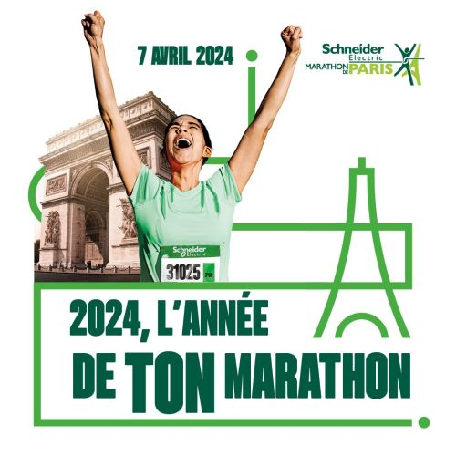
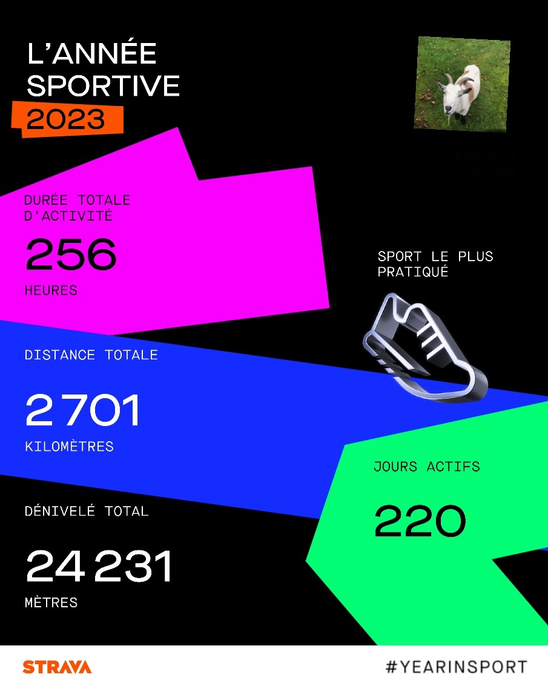

Marathon de Paris 2024
Le 7 avril 2024, j'ai couru le Marathon de Paris. Retour en images.
Trois terrains de jeu : l'IA, la course à pieds et le trail.
Je teste, je casse, je recommence. Ce qui m'intéresse surtout : faire tourner des modèles chez moi et construire des agents qui font vraiment gagner du temps.
Des assistants qui enchaînent les tâches tout seuls : recherche, tri, automatisation.
Faire tourner des LLM sur ma propre machine, sans envoyer mes données ailleurs.
Sur route, des kilomètres et des objectifs chronométrés. Mes courses marquantes et mes bilans de saison.
Mis à jour automatiquement à chaque sortie enregistrée.

Le 7 avril 2024, j'ai couru le Marathon de Paris. Retour en images.

Mon bilan sportif 2023 : 256 heures d'activité, 2 701 km et 24 231 m de dénivelé.
Du dénivelé, de la boue et des levers de soleil. Le trail, c'est là que je vide ma tête et que je recharge les batteries.